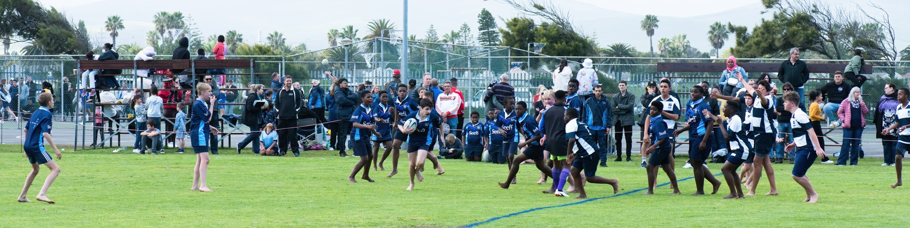
Beyond the classroom
Find your team.
Discover your talent.
Sport and culture give every learner room to build confidence, friendships, discipline and joy — whether they thrive on the field, on stage, at the chessboard or behind a robot.
12sport options
11culture activities
Grades 1–7opportunities to participate
Participate. Grow. Belong.
Something for every interest and ability.
Learners are encouraged to take part, try something new and develop the skills that matter far beyond school.
Our programme combines competitive teams, inclusive participation, creative clubs and specialist extra-murals. Some activities are included in the school programme, while selected private coaching options are available at an additional cost.
Sport at The Ridge
Move, compete and play with purpose.
From first exposure in Grade 1 to competitive school teams, learners develop movement skills, resilience, teamwork and a healthy love of sport.
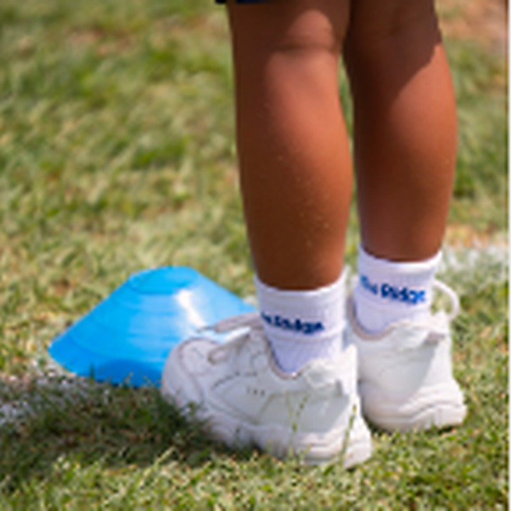
FoundationGrade 1 Sport Skills
In Terms 1 and 2, Grade 1 learners have the opportunity to be exposed to every sport offered at The Ridge. In Term 3, they choose the sport they enjoy most. Dedicated external coaches help us focus on the skills needed for each sport code.
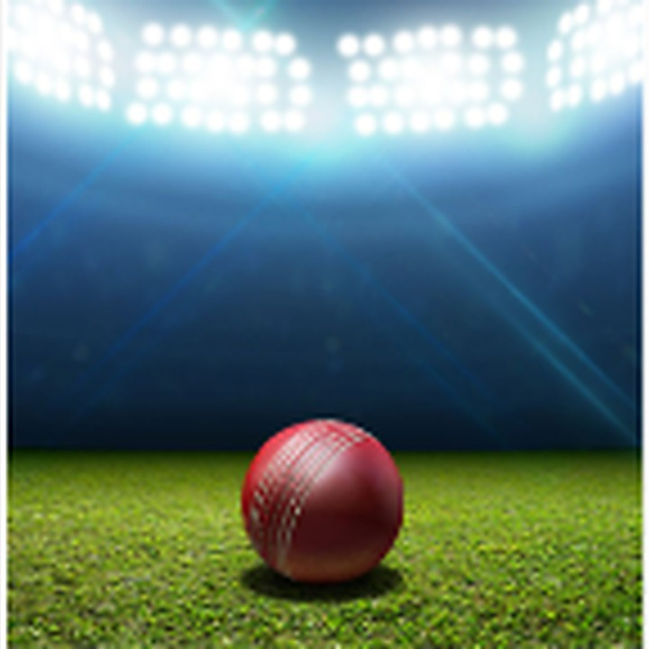
SummerCricket
Cricket is offered during the summer sport season. We have teams ranging from U8 to U13. Outside coaches and teachers assist with practices and matches.
Summer
Tennis
Tennis is offered during the summer sport season. All ages and levels of play are catered for. Our team players receive professional coaching from Atlantic Tennis Academy.
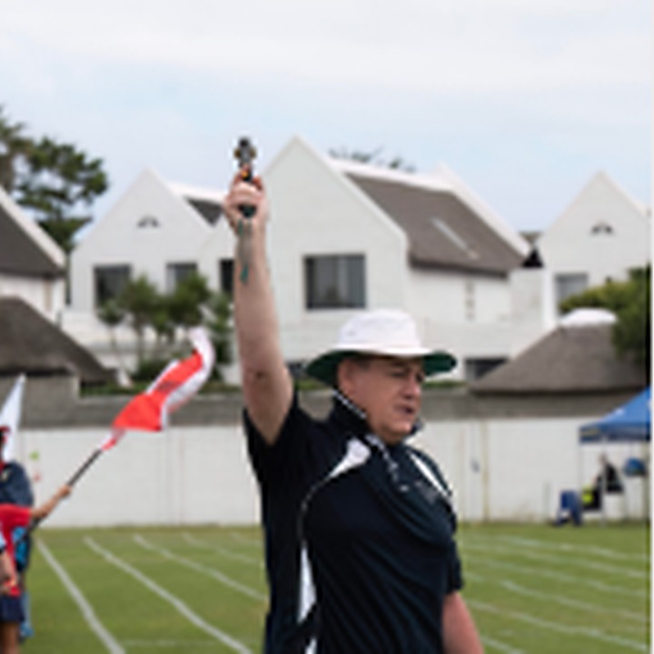
InclusiveAthletics
Athletics is an inclusive sport at our school, and all pupils are encouraged to participate. Learners who excel are given opportunities to compete at regional and district level.
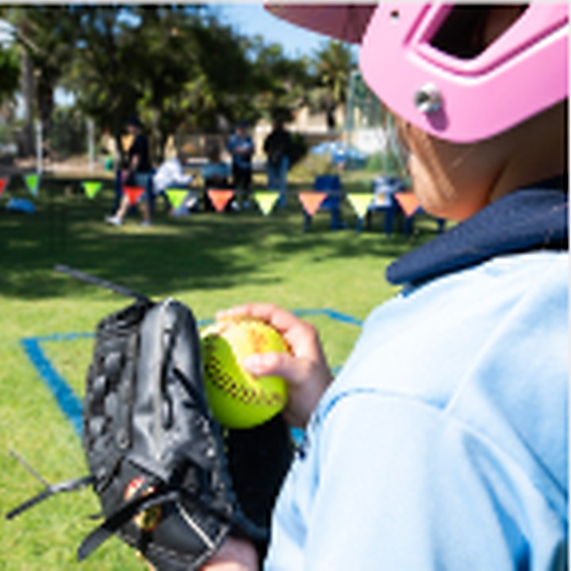
SummerSoftball
Softball is a summer sport offered to girls from Grades 2 to 7. It gives learners the opportunity to develop good ball skills and compete against other schools.
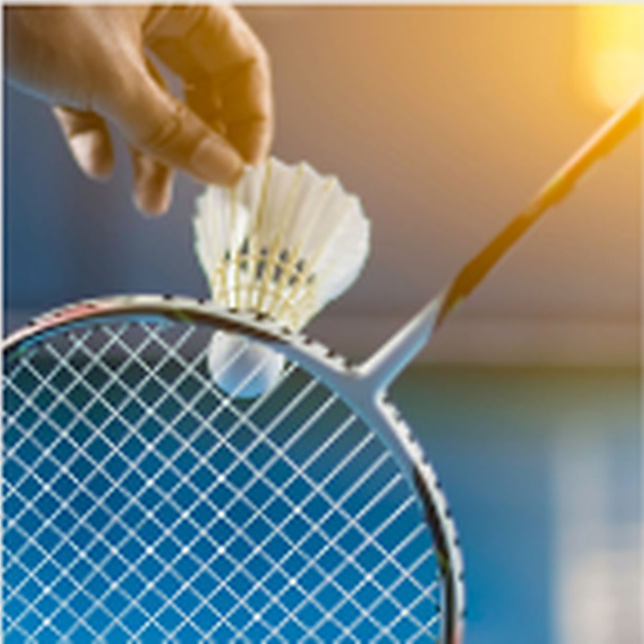
All yearBadminton
Badminton is a developing sport offered throughout the year for U10 to U13 learners. We do not yet play competitively; however, children enjoy learning a sport that is not widely offered.
U8–U13
Soccer
We have soccer teams ranging from U10 to U13, with strong attendance in each age group. Grade 2 and 3 boys and girls, in the U8 and U9 age groups, are offered mini-soccer. They practise mini-soccer skills and play short matches against other schools in the area.
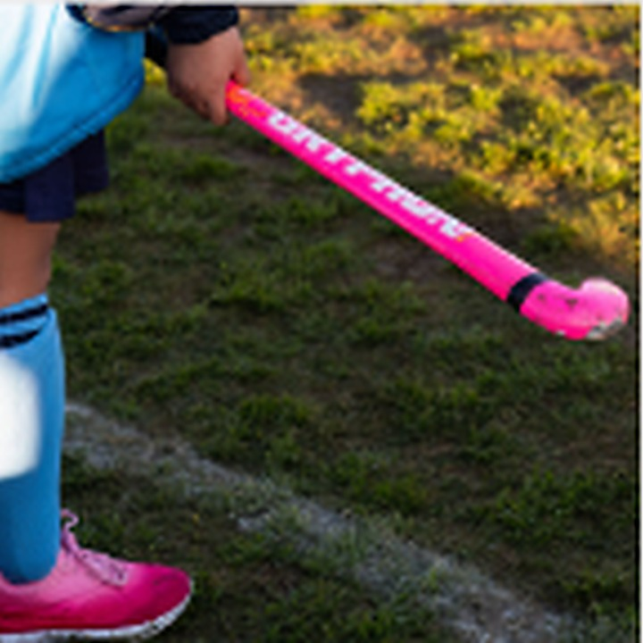
CompetitiveHockey
Girls’ and boys’ hockey is offered from U8 to U13. Hockey is a competitive sport, with matches played each week. We are proud to have our own Astro for learners to play on.
Grades 2–7
Netball
Netball is a competitive sport offered to girls from Grades 2 to 7. We are fortunate to have up to six courts on our premises. Learners who excel may compete at regional and district level, and some of our athletes have progressed as far as provincial level.
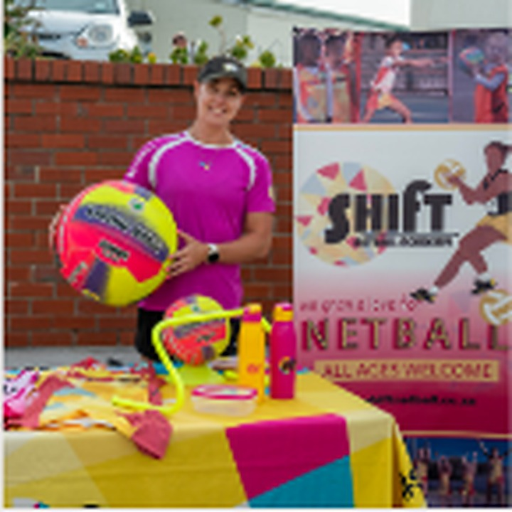
Private coachingShift Netball
Shift Netball offers private netball coaching right here at Blouberg Ridge. Parents may enrol their children at an additional cost.
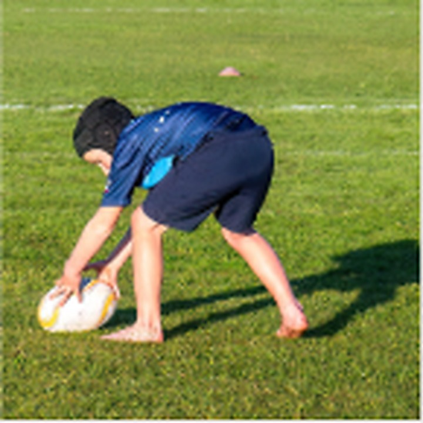
U8–U13Rugby
Rugby has grown in popularity. U8 to U13 teams practise after school and participate in matches during the week, as well as sports days hosted by various schools. Our teams benefit greatly from professional coaches and teachers.
Private coaching
Shift Rugby
Shift Rugby offers private rugby coaching right here at Blouberg Ridge. Parents may enrol their children at an additional cost.
Culture at The Ridge
Create, perform and express yourself.
Culture activities give learners a place to develop creativity, confidence, concentration and new ways of seeing the world.
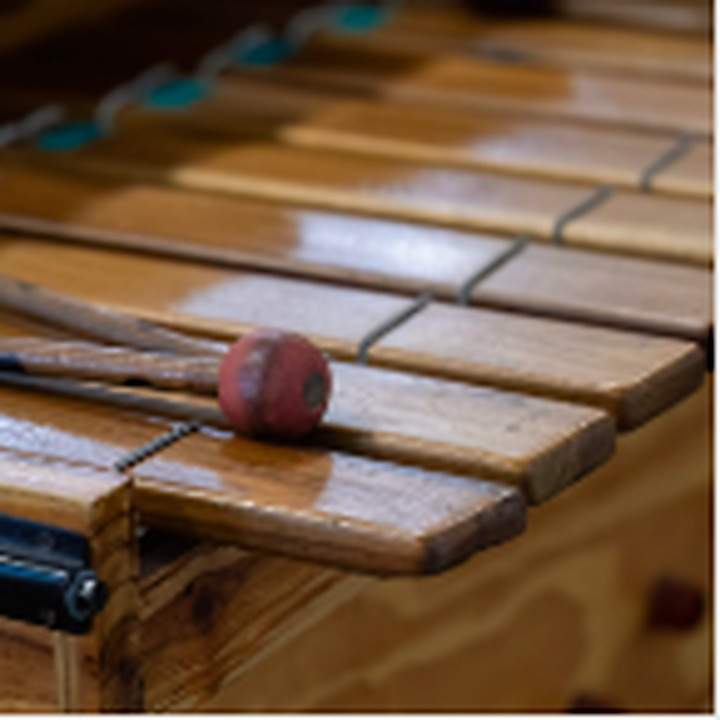
Grades 3–7Marimba
Learners experience the joy of teamwork by being part of the Marimba Band. Learners from Grades 3 to 7 may audition. Performances include school events, community events and Eisteddfods.
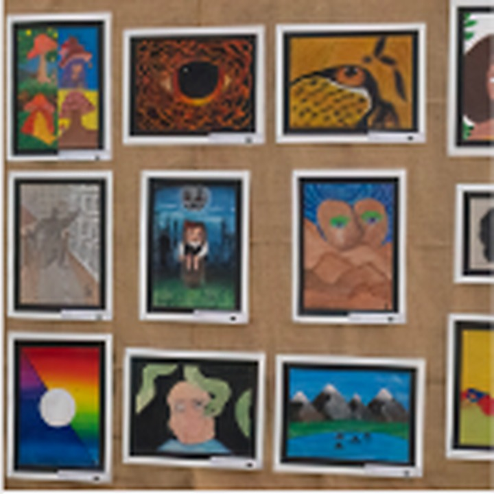
By invitationArt Club
Art Club is offered by invitation to learners who display exceptional artistic talent. During these lessons, learners receive individual attention to develop their natural abilities and are introduced to new skills and art forms.
Grades 4–7
Chess
Children from Grades 4 to 7 have the opportunity to play chess both socially and competitively. We have a reputation for having one of the top chess teams in our area.
Junior & Senior
Choir
We offer both a Junior Choir for Grades 2 and 3 and a Senior Choir for Grades 4 to 7. Our choirs perform at festivals, school functions, pop-up shows, community events and Eisteddfods throughout the year.
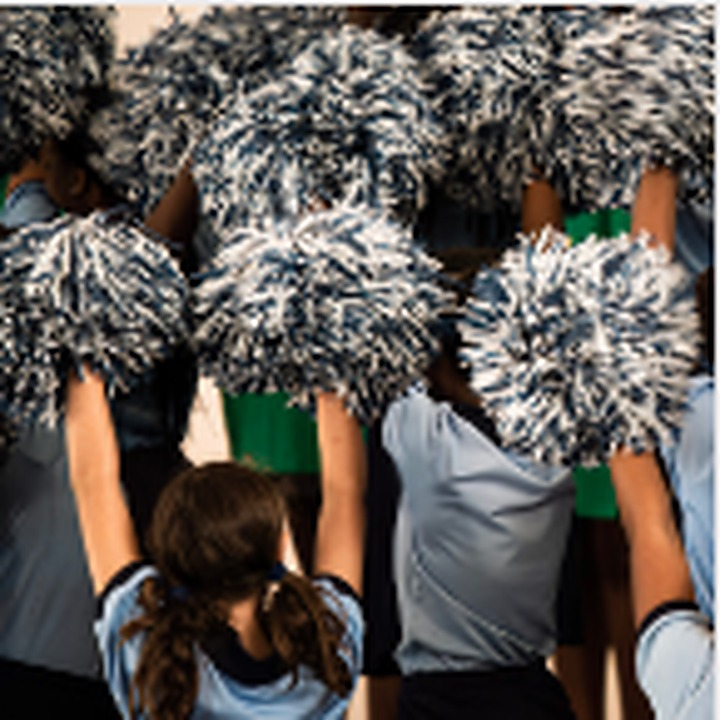
Grades 4–7Cheer Squad
Girls from Grades 4 to 7 may join the cheer squad. Practices take place after school, and the squad has opportunities to perform at sports events hosted by the school.
Grades 4–7
Drama
Drama for Grades 4 to 7 is perfect for both introverts and extroverts. It gives pupils the opportunity to build confidence, explore poetry and plays, improve their diction and learn to project their voices in a fun-filled atmosphere. Pupils also participate in Eisteddfods and plays.
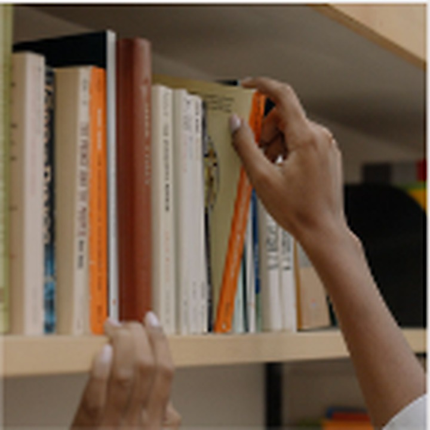
After schoolLibrary
The library is open after school on designated days for children to exchange their library books. Our Birthday Book Sponsorship programme ensures that new books are added to the library on a continual basis.
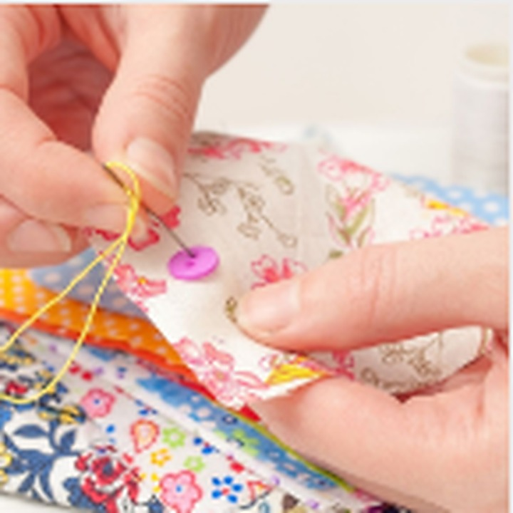
Creative clubTextile Club
Pupils from the Intermediate and Senior Phases who have a creative flair will thoroughly enjoy the Textile Club. Creations are made using various sewing techniques. The club meets twice a week after school, and we enjoy gifting completed items to our community.
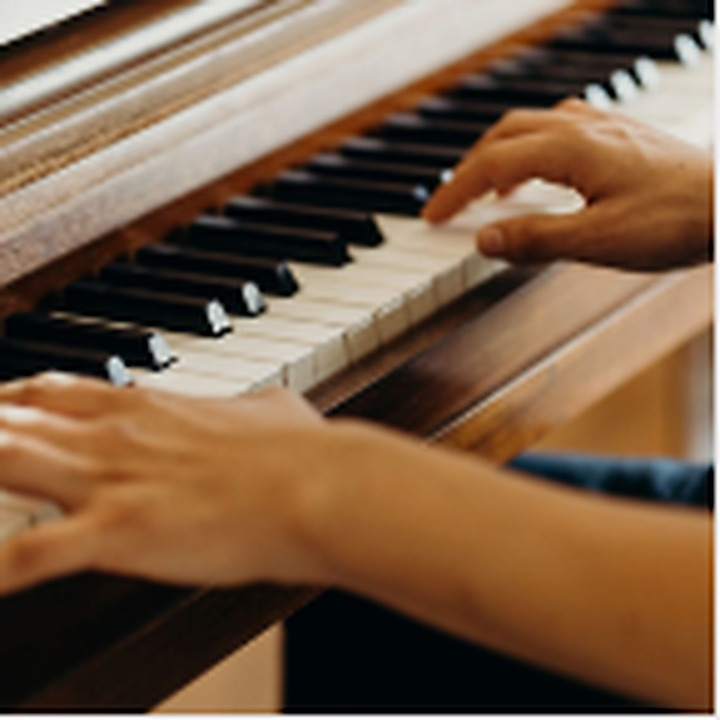
Private lessonsMusic
The school offers private music lessons in piano, vocals and recorder throughout the year at an additional cost to parents. Learners may choose individual, paired or group lessons and perform at school functions, pop-up events and Eisteddfods.
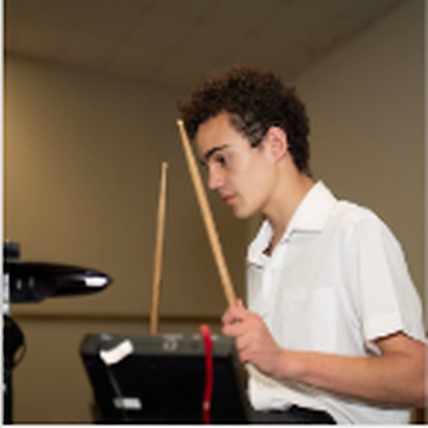
Private lessonsDrumming
Drumming lessons are offered as a private extra-mural throughout the year at an additional cost to parents. Children learn to play the drums and have the opportunity to showcase their talent at our Cultural Evening each year.
Extra-mural
Robotics
Robokids offers private robotics as an extra-mural for Grades 1 to 7. Lessons take place after school at an additional cost to parents. Children enjoy taking part in competitions where they can show off their newly acquired skills.
Get involved
Help your child find the activity that feels like home.
Availability, age groups, seasons and costs may change. Contact the school for the latest activity timetable and enrolment details.